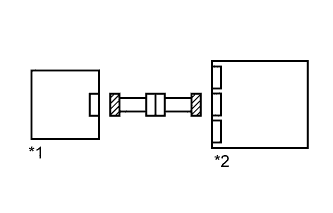
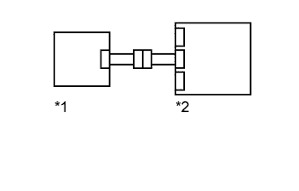

DTC B1612/83 Lost Communication with Front Airbag Sensor RH |
DTC B1613/83 Front Airbag Sensor RH Initialization Incomplete |
| DTC Code | DTC Detection Condition | Trouble Area |
| B1612/83 | One of the following conditions is met:
|
|
| B1613/83 | One of the following conditions is met:
|
|
| Condition | Waiting Time |
| Vehicle enrolled in G-BOOK system | 6 minutes |
| Vehicle not enrolled in G-BOOK system | 1 minute |
| 1.CHECK CONNECTION OF CONNECTORS |
Turn the engine switch off.
Disconnect the cable from the negative (-) battery terminal, and wait for at least 90 seconds.
Check that the connectors are properly connected to the center airbag sensor and front airbag sensor RH.
|
| ||||
| OK | |
| 2.CHECK CONNECTORS |
Disconnect the connectors from the center airbag sensor and front airbag sensor RH.
|  |
Check that the connectors (on the center airbag sensor side and front airbag sensor RH side) are not damaged.
| *1 | Front Airbag Sensor RH |
| *2 | Center Airbag Sensor |
|
| ||||
| OK | |
| 3.CHECK FRONT AIRBAG SENSOR RH CIRCUIT |
Connect the cable to the negative (-) battery terminal, and wait for at least 2 seconds.
| *1 | Front Airbag Sensor RH | *2 | Center Airbag Sensor |
| *3 | Connector E | *4 | Connector B |
| *5 | Service Wire | - | - |
| *a | Front view of wire harness connector (to Front Airbag Sensor RH) | *b | Rear view of wire harness connector (to Center Airbag Sensor) |
Measure the voltage according to the value(s) in the table below.
| Tester Connection | Switch Condition | Specified Condition |
| A17-2 (+SR) - Body ground | Engine switch on (IG) | Below 1 V |
| A17-1 (-SR) - Body ground | Engine switch on (IG) | Below 1 V |
Turn the engine switch off.
Disconnect the cable from the negative (-) battery terminal, and wait for at least 90 seconds.
Using a service wire, connect terminals 29 (+SR) and 27 (-SR) of connector B.
Measure the resistance according to the value(s) in the table below.
| Tester Connection | Condition | Specified Condition |
| A17-2 (+SR) - A17-1 (-SR) | Always | Below 1 Ω |
Disconnect the service wire from connector B.
Measure the resistance according to the value(s) in the table below.
| Tester Connection | Condition | Specified Condition |
| A17-2 (+SR) - A17-1 (-SR) | Always | 1 MΩ or higher |
| A17-2 (+SR) - Body ground | Always | 1 MΩ or higher |
| A17-1 (-SR) - Body ground | Always | 1 MΩ or higher |
|
| ||||
| OK | |
| 4.CHECK FRONT AIRBAG SENSOR RH |
|  |
Connect the connectors to the center airbag sensor.
Interchange the front airbag sensor LH with RH and connect the connectors to them.
Connect the cable to the negative (-) battery terminal, and wait for at least 2 seconds.
Turn the engine switch on (IG), and wait for at least 60 seconds.
Clear the DTCs stored in memory (Click here).
Turn the engine switch off.
Turn the engine switch on (IG), and wait for at least 60 seconds.
Check for DTCs (Click here).
| Result | Proceed to |
| DTC B1612, B1613, B1617 and B1618 are not output | A |
| DTC B1617 or B1618 is output | B |
| DTC B1612 or B1613 is output | C |
| *1 | Front Airbag Sensor LH |
| *2 | Center Airbag Sensor |
|
| ||||
|
| ||||
| C | ||
| ||
| 5.CHECK INSTRUMENT PANEL WIRE (CENTER AIRBAG SENSOR - ENGINE ROOM MAIN WIRE) |
Disconnect the instrument panel wire connector from the engine room main wire.
| *1 | Front Airbag Sensor RH | *2 | Center Airbag Sensor |
| *3 | Engine Room Main Wire | *4 | Instrument Panel Wire |
| *5 | Connector C | *6 | Connector B |
| *7 | Service Wire | - | - |
| *a | Front view of wire harness connector (to Engine Room Main Wire) | *b | Rear view of wire harness connector (to Center Airbag Sensor) |
Connect the cable to the negative (-) battery terminal, and wait for at least 2 seconds.
Measure the voltage according to the value(s) in the table below.
| Tester Connection | Switch Condition | Specified Condition |
| GA4-1 (+SR) - Body ground | Engine switch on (IG) | Below 1 V |
| GA4-2 (-SR) - Body ground | Engine switch on (IG) | Below 1 V |
Turn the engine switch off.
Disconnect the cable from the negative (-) battery terminal, and wait for at least 90 seconds.
Using a service wire, connect terminals 29 (+SR) and 27 (-SR) of connector B.
Measure the resistance according to the value(s) in the table below.
| Tester Connection | Condition | Specified Condition |
| GA4-1 (+SR) - GA4-2 (-SR) | Always | Below 1 Ω |
Disconnect the service wire from connector B.
Measure the resistance according to the value(s) in the table below.
| Tester Connection | Condition | Specified Condition |
| GA4-1 (+SR) - GA4-2 (-SR) | Always | 1 MΩ or higher |
| GA4-1 (+SR) - Body ground | Always | 1 MΩ or higher |
| GA4-2 (-SR) - Body ground | Always | 1 MΩ or higher |
|
| ||||
| OK | ||
| ||